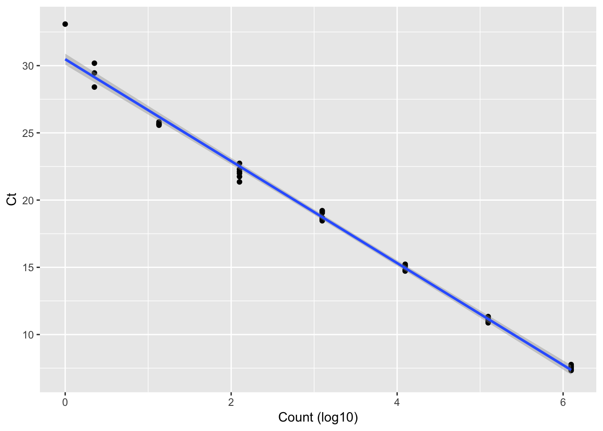
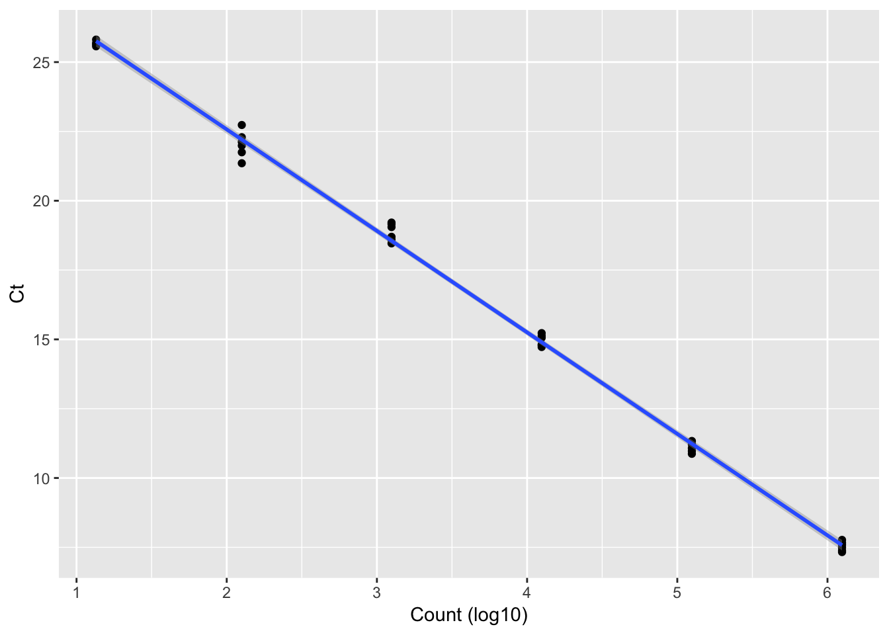

This tutorial shows how to analyze wafergen data. Wafergen data is nothing but bigger size of qPCR. So, let’s start with qPCR data analisis.
This section will show analyse qPCR data in R. It is environmental samples in the tutorial. Let’s start with house-keeping gene(16S rRNA).
library(reshape2)
library(ggplot2)
library(ggpubr)## Loading required package: magrittrFirst, let’s read data that we need. It is two runs (chip1 and chip2) with same primer sets. Lanying103018_Chip1.txt and Lanying103018_Chip2.txt are the data files from wafergen run. Also, we need two more files, 1) metadata and 2) information of standard. First, it is user’s responsibility to make metadata. It contains description of samples. meta_data.csv is the example of metadata. In this example, there are two years (2016 and 2017), 24 weeks(0 to 23), four manure treatment (LFM, EFM, SM, Control), and Two tillage(CP and NT but only EFM has this treatment). Second, meta_standard.csv contains which standard was used, which primer should be used and expected count. There are four assay(16S, ermB, ermF, tetM) were used, but let’s start with 16S and ermB.
#read data
chip1 <- read.table("../data/Lanying103018_Chip1.txt", sep="\t", header=T)[,c("Assay","Sample","Ct")]
chip2 <- read.table("../data/Lanying103018_Chip2.txt", sep="\t", header=T)[,c("Assay","Sample","Ct")]
#get sample info
meta <- read.csv("../data/meta_data.csv")
#standard
meta_std <- read.csv("../data/meta_standard.csv")Let’s merge two chip into one data table since we have two run.
dat <- rbind(chip1,chip2)Let’s start with 16S first. Set target name “16s”. This name sould be matched with the name in meta_standard.csv and data files(Lanying103018_Chip1.txt and Lanying103018_Chip2.txt). Also, we assign column name of sample id that used in the metadata (meta_data.csv) in case different user name it different way. In our case our column name that contains sample name is “sample”.
name_target = "16s"
sample_id = "sample"First, we need standard curve. To analyze 16S, we subset the data only 16S primer was used.
sub <- subset(dat, Assay %in% name_target)This is information of standard with only 16S rRNA gene
meta_sub <- subset(meta_std, Assay %in% name_target)Another sub for only standard.
data_sub <- subset(sub, Sample %in% meta_sub$Sample)add expected count for each standard samples
merged_std <- merge(data_sub, meta_sub, by.x = "Sample", by.y = "Sample", all.x=T)Remove NA
merged_std_no_NA <- subset(merged_std, Ct != "NA")This is Ct values for each standard
ct <- merged_std_no_NA$Ct This is log10 based expected count
count <- log10(merged_std_no_NA$count+1)Let’s plot it
table_for_ggplot <- data.frame(ct = ct, count = count)
ggplot(table_for_ggplot, aes(x= count, y=ct))+geom_point()+geom_smooth(method='lm')+labs(x="Count (log10)", y = "Ct")
It looks good. What is the R square value?
lm.r <- lm(ct ~ count)
summary(lm.r)$r.squared## [1] 0.9931072R square looks good. How about efficiency?
coef <- coef(lm.r)[2]
eff <- 100*((10^(-1/coef))-1)
(eff)## count
## 83.56041Efficiency dose not looks great. You can see the data point (count=0) is off. It is common data points with low count (or zero count) are not very good align with. Maybe we can remove some point with low count.
quality_filtered <- subset(merged_std_no_NA, count > 10)Let’s calculate R square and efficiency again.
ct <- quality_filtered$Ct
count <- log10(quality_filtered$count+1)
lm.r <- lm(ct ~ count)
summary(lm.r)$r.squared## [1] 0.9975204coef <- coef(lm.r)[2]
eff <- 100*((10^(-1/coef))-1)
(eff)## count
## 87.57528R square and efficiency looks better. and plot it.
table_for_ggplot <- data.frame(ct = ct, count = count)
ggplot(table_for_ggplot, aes(x= count, y=ct))+geom_point()+geom_smooth(method='lm')+labs(x="Count (log10)", y = "Ct")
We are going to use data table only countains with 16S assay with it. Make mean since we run it triplicate.
casted <- dcast(sub, Sample~Assay, fun=mean, value.var = "Ct")To understand which sample is which, add metadata.
merged_meta <- merge(meta, casted, by.x = sample_id, by.y="Sample")We are going to use linear model regression, but this time inverse x and y axis
inverse.lm <- lm(count ~ ct)Get Ct values
val = merged_meta[,name_target]Using linear model, calculate count. then, save into column name “temp”
merged_meta$temp<- 10^predict(inverse.lm ,data.frame(ct = val), interval = "predict")[,1]Change column name meaningful
names(merged_meta)[ncol(merged_meta)] <- paste0("cal_", name_target)
names(merged_meta)[ncol(merged_meta)-1] <- paste0("mean_", name_target)We can repeat this process into other target
Copyright © 2019 germslab. All rights reserved.